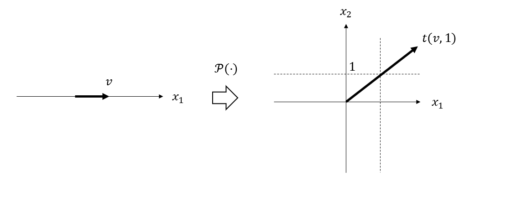

这篇是 《Convex Optimization》 | Stephen Boyd, Lieven Vandenberghe | Cambridge University Press 一书的笔记。第一次尝试阅读英文原版书籍，可能会有些不好理解的内容，整理在这篇笔记中。另外，一部分英文术语与中文术语的对照也会放在本文中。
本篇编号系统与原书一致。（但右边栏的BUG不太想修了x
Version
- 2019/10/10 ver0.1 创建文档
2 Convex sets
2.1 Affine and convex sets
2.1.3 Affine dimension and relative interior
$$
\mathrm{relint}\ C = \lbrace x \in C \ | \ B(x, r) \cap \mathrm{aff}\ C \subseteq C \ \text{for some} \ r > 0 \rbrace
$$where $B(x, r) = \lbrace y \ | \ \Vert y-x \Vert \leq r \rbrace$
将公式翻译成中文可以译为：邻域与仿射包的交集是$C$的子集的 全部$x$的集合。
We can then define the relative boundary of a set $C$ as $\mathrm{cl}\ C \setminus \mathrm{relint}\ C $, where $\mathrm{cl}\ C$ is the closure of $C$.
这里涉及到了很多符号和文中没有事先给出定义的一部分概念。
- 开集：集合内任意一点，存在该点的一个邻域也全在集合中。
- 闭集：补集为开集的集合。
(来源请求)
反斜杠$\setminus$表示差集，这样就可以比较容易地理解relative boundary的含义。
2.1.5 Cones
这里对比一下三种组合(combination)的区别与联系：
- affine combination: $\theta_1 x_1 + \cdots + \theta_k x_k$ where $\theta_1 + \cdots + \theta_k = 1$
- convex combination: $\theta_1 x_1 + \cdots + \theta_k x_k$ where $\theta_1 + \cdots + \theta_k = 1, \theta_i \geq 0$
- conic combination: $\theta_1 x_1 + \cdots + \theta_k x_k$ where $\theta_i \geq 0$
可以发现，锥组合(conic combination)和仿射组合(affine combination)的要求相对于凸组合(convex combination)的要求更小。
再对比一下三种集合(set)的区别与联系，这里我们使用基于各自对应的组合的定义：
- affine set: an affine set contains every affine combination of its points.
- convex set: a set is convex if and only if it contains every convex combination of its points.
- convex cone: a set $C$ is a convex cone if and only if it contains all conic combinations of its elements.
尤其注意第三行，我们发现锥组合所对应的集合并不是锥(cone)，而是凸锥(convex cone)。因此比较三种组合条件的强弱，我们可以得出：
仿射集合一定是凸集合，凸锥集合也一定是凸集合。
是锥但不是凸集合和例子：两条不在同一直线上的射线。[by Johntheuser]
2.2 Some important examples
2.2.1 Hyperplanes and halfspaces
内点：$x \in C$， 若$U(x, \delta) \in C$，则$x$为内点
2.3 Operations that preserve convexity
2.3.1 Intersection
(Subspaces, affine sets, and convex cones are also closed under arbitrary intersections.)
翻译：对于任意的交集运算(arbitrary insersections)而言，子空间、仿射集合、凸锥集合也是封闭的。
2.3.2 Affine functions
根据性质，如果可以构建一个仿射函数，并证明定义域或值域其中一个为凸集，那么另一个也一定是凸集。
Example 2.9
$$ \lbrace x \ | \ Ax \preceq b, Cx = d \rbrace = \lbrace x \ | \ f(x) \in \mathbb{R}^m_{+} \times \lbrace 0 \rbrace \rbrace $$
其中 $f(x) = (b −Ax, d −Cx)$
用一个$x$将满足不等式与等式要求的解组合成列向量，前一部分向量大于等于$0$，后一部分向量等于$0$。值域是凸锥，所以定义域是凸集。
Example 2.10
$$ \lbrace x \ | \ A(x) \preceq B \rbrace = \lbrace x \ | \ f(x) \in \mathbb{S}^m_{+} \rbrace$$
其中 $f(x) = B - A(x) = B - x_1 A_1 - \cdots - x_n A_n, \text{where}\ A_i , B \in \mathbb{S}^m$
由于$A_i, B$都是对称矩阵，且$x_i$为标量，因此$f(x)$的值域也是对称矩阵。但为了满足不等式，我们要求值域是半正定对称矩阵。由于半正定对称矩阵是凸锥，因此定义域是凸集。
Example 2.11
$$ \lbrace x \ | \ x^\mathrm{T} P x \leq (c^\mathrm{T} x)^2, c^\mathrm{T} x \geq 0 \rbrace = \lbrace x \ | \ f(x) \in \lbrace (z, t) \ | \ z^\mathrm{T} z \leq t^2, t \geq 0 \rbrace \rbrace$$
其中 $f(x) = (P^{\frac{1}{2}}x, c^\mathrm{T}x ), \text{where}\ P \in \mathbb{S}^n_{+}, c \in \mathbb{R}^n$
将列向量分成两部分，一部分满足$x^\mathrm{T} P x \leq (c^\mathrm{T} x)^2$，第二部分满足$c^\mathrm{T} x \geq 0$。由于值域是凸锥，所以定义域是凸集。
2.3.3 Linear-fractional and perspective functions
Linear-fractional functions
$$ f(x) = (Ax + b) / (c^\mathrm{T}x + d), \qquad \mathrm{dom} f = \lbrace x \ | \ c^\mathrm{T}x + d > 0 \rbrace $$
书中的Remark 2.2简单说明该函数保持集合的凸性。
Remark 2.11
首先定义一个矩阵$Q$
$$ Q = \left[ \begin{matrix}
A & b \\
c^\mathrm{T} & d \\
\end{matrix}
\right]
\in \mathbb{R}^{(m+1) \times (n+1)} $$于是可以得到
$$ Q \ \left[ \begin{matrix} x \\ 1 \\ \end{matrix} \right]
= \left[ \begin{matrix} Ax+b \\ c^\mathrm{T}x + d \\ \end{matrix} \right]
$$显然，将得到的列向量除以$c^\mathrm{T}x + d$就可以得到$(f(x), 1)$。并且，该操作是仿射的。
我们再定义一个函数$\mathcal{P}(v)$
$$ \mathcal{P}(v) = \lbrace t (v, 1) \ | \ t \geq 0 \rbrace $$
该函数将一个向量$v \in \mathbb{R}^n$映射成高维的一条射线$\lbrace t (v, 1) \ | \ t \geq 0 \rbrace \in \mathbb{R}^{(n+1)}$。因此，该函数构造了一个$n$维实数域到$n+1$维实数域的半空间之间的映射。因此，该函数保持了集合的凸性。

最后，我们将线性分式函数表示成：
$$ f(x) = \mathcal{P}^{-1} (Q \mathcal{P}(x)) $$
从而推知该函数也将保持集合的凸性。
2.3.3 Linear-fractional and perspective functions
example 2.1.3
$$f_{ij} = \frac{p_{ij}}{\sum_{k=1}^n p_{kj}}$$
我们将该公式与原定义$f(x) = (Ax + b) / (c^{\mathrm{T}}x + d)$进行比对。将上式表示成：
$$ f_{ij} = \frac{\left[ \begin{matrix}
0 & \quad & \quad & \quad & \quad \\
\quad & \ddots & \quad & \quad & \quad \\
\quad & \quad & 1 & \quad & \quad \\
\quad & \quad & \quad & \ddots & \quad \\
\quad & \quad & \quad & \quad & 0
\end{matrix} \right] p_j + 0}{\left[ \begin{matrix}
1 & 1 & 1 & \cdots & 1 \end{matrix}
\right] p_j + 0}$$其中，$A$矩阵中的元素$1$为第$i$行，第$i$列，$p_j$表示给定$v = j$，$u$在各个$i$上的条件概率组成的列向量。
2.4 Generalized inequalities
2.4.1 Proper cones and generalized inequalities
内部：点集$E$的所有内点组成的集合。
proper cone : 真锥
2.4.2 Minimum and minimal elements
minimum: 最小元、minimal:极小元
2.5 Separating and supporting hyperplanes
2.5.1 Separating hyperplane theorem
inf: 最大下界、sup：最小上界
Proof of separating hyperplane theorem
我们构造一个点$u \in D$，那么在集合$D$中与集合$C$最近的的点$d$所构成的线段为$d+t(u-d), \ 0 < t \leq 1$。那么，这个点与在集合$C$中与集合$D$最近的点$c$的距离
$$
\begin{aligned}
g(t) = \Vert d + t(u-d) - c \Vert_2 &= [d + t(u-d) - c]^{\mathrm{T}} [d + t(u-d) - c] \\
&= d^{\mathrm{T}}d + td^{\mathrm{T}}(u-d) - d^{\mathrm{T}}c \\
&+ t(u^{\mathrm{T}} - d^{\mathrm{T}})d + t^2 \Vert u - d \Vert^2_2 - t(u^{\mathrm{T}} \\
&- d^{\mathrm{T}})c - c^{\mathrm{T}}d - tc^{T}(u-d) + c^{\mathrm{T}}c
\end{aligned}
$$
$$
\begin{aligned}
\frac{\mathrm{d} \Vert d + t(u-d) - c \Vert_2 }{\mathrm{d}t} \arrowvert_{t = 0} &= d^{\mathrm{T}} (u-d) + (u^{\mathrm{T}} - d^{\mathrm{T}})d - (u^{\mathrm{T}} - d^{\mathrm{T}})c - c^{T}(u-d) \\
&= 2 (d-c)^{\mathrm{T}} (u-d) < 0
\end{aligned}
$$
由此，我们求出了$g(t)$在$t=0$处的导数小于0，所以一定存在某一点，使得$g(t) < g(0) = \Vert d-c \Vert^2_2$，从而找到一个点比点$d$更接近点$c$。这就与关于$d$的假设矛盾，从而不存在点$u$使得$f(u)<0$。
2.6 Dual cones and generalized inequalities
2.6.1 Dual cones
$$ y \in K^{*} \Leftrightarrow -y \text{是位于远点的} K \text{的支撑超平面的法线}$$
支撑超平面的要求是：如果$a \neq 0$，并且对于所有$x \in C$，有$a^{\mathrm{T}}x \leq a^{\mathrm{T}}x_0$成立。显然，这里的$x_0$是原点。因此$a^{\mathrm{T}}x \leq 0$。因此，当法线为$-y$时，$y^{\mathrm{T}}x \geq 0$，因此y在对偶锥中。
3 Convex functions
3.1 Basic properties and examples
3.1.9 Inequalities
简单说明一下Holder’s inequality的最后一句：
Summing over $i$ then yields Holder’s inequality.
$$
\begin{aligned}
\sum_i \left( \frac{ | x_i | ^ p}{ \sum_{j=1}^n |x_j|^p} \right)^{1/p} \left( \frac{ | y_i | ^ q}{ \sum_{j=1}^n |y_j|^q} \right)^{1/q} &\leq \sum_i \frac{|x_i|^p}{p \sum_{j=1}^n |x_j| ^ p} + \sum_i \frac{|y_i|^q}{q \sum_{j=1}^n |y_j| ^ q} \\
\frac{\sum_i |x_i| \cdot |y_i|}{X^{1/p}Y^{1/q}} &\leq \frac{\sum_i |x_i|^p}{pX} + \frac{\sum_i |y_i|^q}{qY} = \frac{X}{pX} + \frac{Y}{qY} = \frac{1}{p} + \frac{1}{q} = 1 \\
\sum_i |x_i| \cdot |y_i| &\leq X^{1/p}Y^{1/q} \\
\end{aligned}
$$
3.2 Operations that preserve convexity
3.2.1 Nonnegative weighted sums
$$
\mathrm{epi}(wf) = \left[ \begin{matrix}
I & 0 \\
0 & w \\
\end{matrix} \right]
\left[\begin{matrix}
x \\
t \\
\end{matrix}
\right]
=
\left[\begin{matrix}
x \\
wt \\
\end{matrix}
\right]
$$
3.3 The conjugate functio
3.3.1 Definition and examples
Example 3.23
当$Y \prec 0$时：
$$\begin{aligned}
f^{*}(Y) &= \mathrm{tr}(Y(-Y)^{-1}) + \log \det (-Y)^{-1} \\
&= \mathrm{tr}(-I) + \log \det (-Y)^{-1} \\
&= -n + \log \det (-Y)^{-1} \\
\end{aligned}$$
Example 3.25
By substituting the expression for $y_i$ into $y^{\mathrm{T}}x−f(x)$ we obtain $f^{*}(y) = \sum_{i=1}^n y_i \log(y_i)$
ref:https://math.stackexchange.com/questions/2614316/conjugate-function-of-log-sum-exp
4 Convex optimization problems
4.4 Quadratic optimization problems
4.4.1 Examples
Linear program with random cost
$$\mathrm{var}(c^{\mathrm{T}}x) = \mathrm{E}(c^{\mathrm{T}}x - \mathrm{E}c^{\mathrm{T}}x)^2 = \mathrm{E}(c^{\mathrm{T}}x - \bar{c}^{\mathrm{T}}x)^2 = x^{\mathrm{T}} \mathrm{E}(c - \bar{c})(c - \bar{c})^{\mathrm{T}}x$$
4.6 Generalized inequality constraints
4.6.3 Examples
Matrix norm minimization
根据A.5.5的知识，设$S$是$X$的Schur补。如果$A \succ 0$，那么$X \succeq 0$等价于$S \succeq 0$
那么，
$$
\begin{aligned}
A^{\mathrm{T}}A &\preceq t^2 I \\
t^2 I - A^{\mathrm{T}} A &\succeq 0 \\
t I - A^{\mathrm{T}} \frac{1}{t} I A &\succeq 0 \Leftrightarrow \left[ \begin{matrix}
tI & A \\
A^{\mathrm{T}} & tI \\
\end{matrix}
\right] \succeq 0 \\
C - B^{\mathrm{T}} A^{-1} B &\succeq 0 \Leftrightarrow \left[ \begin{matrix}
A & B \\
B^{\mathrm{T}} & C \\
\end{matrix}
\right] \succeq 0 \\
\end{aligned}
$$
Appendices
A.1 Norms
A.1.5 Operator norms
对于2范数而言，算子范数为：
$$
\begin{aligned}
\Vert X \Vert_2 &= \mathrm{sup} \lbrace \Vert Xu \Vert_2 \ | \ \Vert u \Vert_2 \leq 1 \rbrace \\
&= \mathrm{sup} \lbrace \left[ (Xu)^{\mathrm{T}} (Xu) \right] ^{\frac{1}{2}} \ | \ (u^{\mathrm{T}} u)^{\frac{1}{2}} \leq 1 \rbrace \\
&= \mathrm{sup} \lbrace \left[ u^{\mathrm{T}}X^{\mathrm{T}}Xu \right]^{\frac{1}{2}} \ | \ u^{\mathrm{T}} u \leq 1 \rbrace \\
&= \mathrm{sup} \lbrace \left[ \lambda_{\mathrm{max}}(X^{\mathrm{T}}X) u^{\mathrm{T}} u \right] ^{\frac{1}{2}} \ | \ u^{\mathrm{T}} u \leq 1 \rbrace \\
&= \lambda_{\mathrm{max}}(X^{\mathrm{T}}X) \\
\end{aligned}
$$
A.3 Functions
A.3.3 Closed functions
Example A.1
$[0, +\infty]$ 是闭集。
A.5 Linear algebra
A.5.5 Schur complement
由$Ax + By = u$推出：
$$ x = A^{-1} (u- By)$$
带入$B^{\mathrm{T}}x + Cy = v$中得到：
$$
\begin{aligned}
B^{\mathrm{T}}A^{-1}u - B^{\mathrm{T}}A^{-1}y + Cy &= v \\
B^{\mathrm{T}}A^{-1}u + Sy &= v \\
y &= S^{-1}(v - B^{\mathrm{T}}A^{-1}u) \\
\end{aligned}
$$
然后将$y$带入得到$x$：
$$
\begin{aligned}
x &= A^{-1} [u - BS^{-1}(v-B^{\mathrm{T}}A^{-1}u)] \\
&= (A^{-1} - A^{-1}BS^{-1}B^{\mathrm{T}}A^{-1})u - A^{-1}BS^{-1}v \\
\end{aligned}
$$
然后，根据：
$$
\begin{equation}
\left[ \begin{matrix}
x \\
y \\
\end{matrix}
\right] = \left[ \begin{matrix}
A & B \\
B^{\mathrm{T}} & C \\
\end{matrix}
\right]^{-1}
\left[ \begin{matrix}
u \\
v \\
\end{matrix}
\right]
\end{equation}
$$
从而可以得到那个神必逆矩阵。